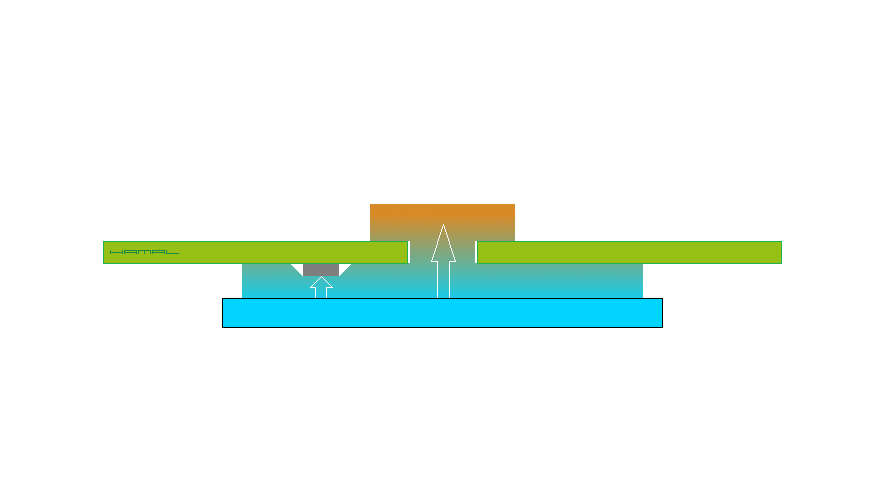
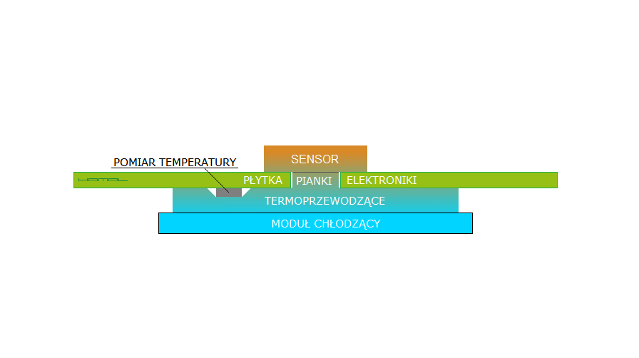
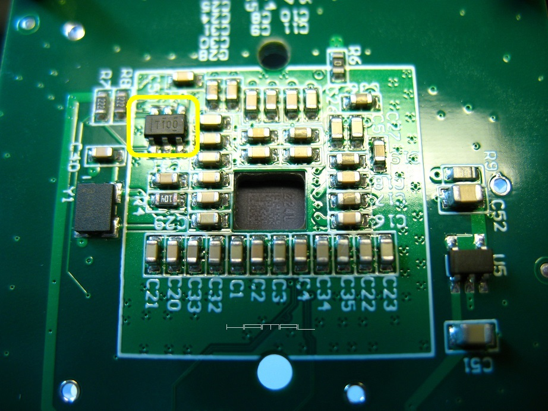
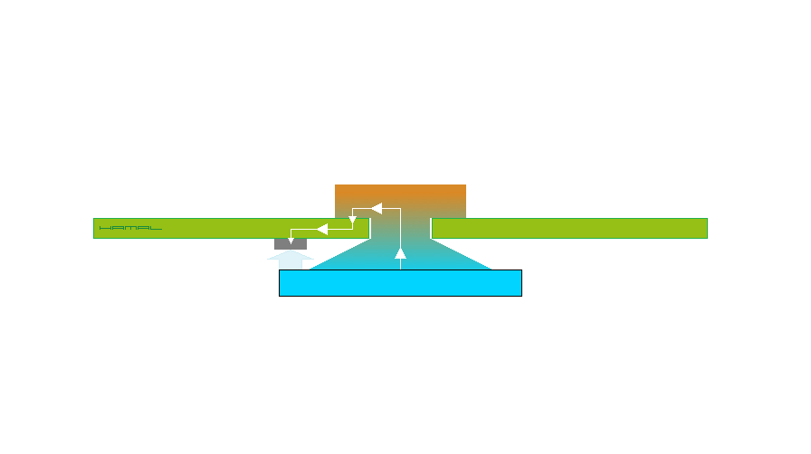

CYFROWEGO PRZETWORNIKA OBRAZU
KAMERKI ASTROFOTOGRAFICZNEJ
12-09-2020
|
OPIS Jaką temperaturę posiada cyfrowy przetwornik obrazu (sensor) w kamerze w czasie sesji astrofotograficznej? Wystarczy przecież sprawdzić w oprogramowaniu akwizycyjnym? Prawda? Niestety, jak się okazuje, nie prawda. I to wcale nie z winy samego oprogramowania, lecz trochę z winy producenta kamery, a trochę z winy naszego błędnego założenia. Nam się wydaje, że pomiar temperatury pochodzi z jakiegoś czujnika wbudowanego w cyfrowy przetwornik obrazu, niestety, nie pochodzi, sensory takowych czujników nie posiadają. No to pewnie pochodzi z czujnika temperatury tuż obok sensora? Nie, nie pochodzi. Ale, tu już z winy samych producentów kamer, którzy jak się okazuje, czujniki powyższe montują z dala od sensorów, po przeciwnej stronie płytki. Dla formalności nie ja jestem odkrywcą powyższego, lecz nasz Astro Kolega, z forum Astropolis o nicku Mareq, który przy okazji mojego grzebania w ASI 290MM-C w TYM wątku, dostrzegł i ujawnił zagadnienie. Poniższy obrazek to przekrój układu chłodzenia sensora w kamerze astrofotograficznej. Abyś wiedział, na co patrzysz, koniecznie zajrzyj TUTAJ.  Mając powyższe na względzie, patrząc na poniższą grafikę obrazującą rozkład temperatur, możemy być pewni, że temperatura naszego sensora jest o wiele wyższa, niż deklaruje daleko położony czujnik temperatury. Producent za pomocą ogniwa Peltiera i sporego plastra termopada chłodzi sporą połać płytki elektroniki matrycy, ale o ile sam czujnik temperatury na rzeczonej płytce ciepła nie wytwarza, o tyle matryca i owszem, i to sporo, więc nie jest możliwością, aby oba elementy pracowały w takich samych temperaturach (patrz obrazek poniżej). Na domiar złego, czujnik pomiaru temperatury jest położony dużo bliżej modułu chłodzącego co jeszcze bardziej potęguje różnicę pomiędzy temperaturą rzeczywistą sensora, a tą mierzoną przez czujnik temperatury.  Dla przypomnienia, co jest czym.  PRZYKŁADY ZWO ASI 224MC - Miejsce pomiaru temperatury sensora w kamece ASI 224MC zostało oznaczone na żółto (T100) - tylna strona płytki elektroniki sensora.  ZWO ASI 290MM-C - Miejsce pomiaru temperatury matrycy w kamece ASI 290MM-C zostało oznaczone na żółto (T100) - tylna strona płytki elektroniki sensora.  Wyjaśniło się przy okazji (patrz grafika poniżej), dlaczego samodzielnie montowane przeze mnie układy chłodzenia do niechłodzonych kamer, mimsporego szronu na sensorach, wykazywały tak niskie wartości delta. Okazuje się, że moje konstrukcje chłodzące precyzyjnie jedynie sensory, nie chłodziły przy okazji położonych w znacznej odległości czujników pomiaru temperatury, a to, co do nich docierało, to jedynie przenoszony przez płytkę elektroniki matrycy chłód, którego z natury rzeczy, nie mogło być aż tak wiele. Troszkę chłodu też docierało przez dzielące ogniwo chłodzące i czujnik powietrze, ale jak wiadomo, nie ma lepszego izolatora niż nieruchome powietrze, a te zamknięte w obudowie kamerki takim jest.  Poniżej, moje przeróbki kamer ukierunkowane na chłodzenie od tyłu jedynie sensora. ASI120 
ASI224 Mod 1 
ASI224 Mod 2 


|